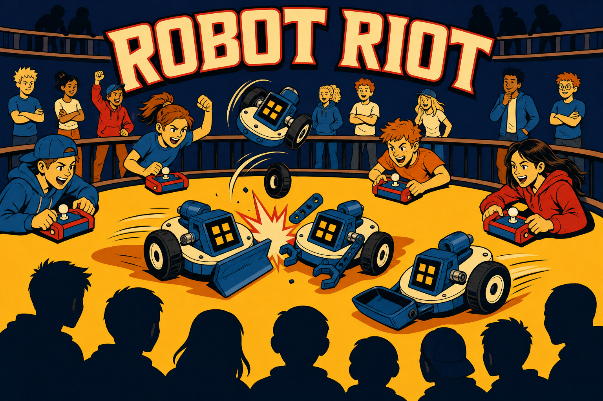

FRONT

BACK

ROBOT RIOT
Saturday, July 11 · 1:00 PM · The Robot Garage
You build the robot. You wire it, program it, and rig it with flippers, pushers, and grippers. Then you drive it into the arena and crash it into everyone else's machine. No spectating — you're in the driver's seat.
Scan to sign up — it's free!
jointheleague.org/0G
The League of Amazing Programmers is a 501(c)(3) nonprofit
EIN 20-4744610
Markdown supported (**bold**, *italic*, [link](url)). Enter saves · Shift+Enter for a new line.